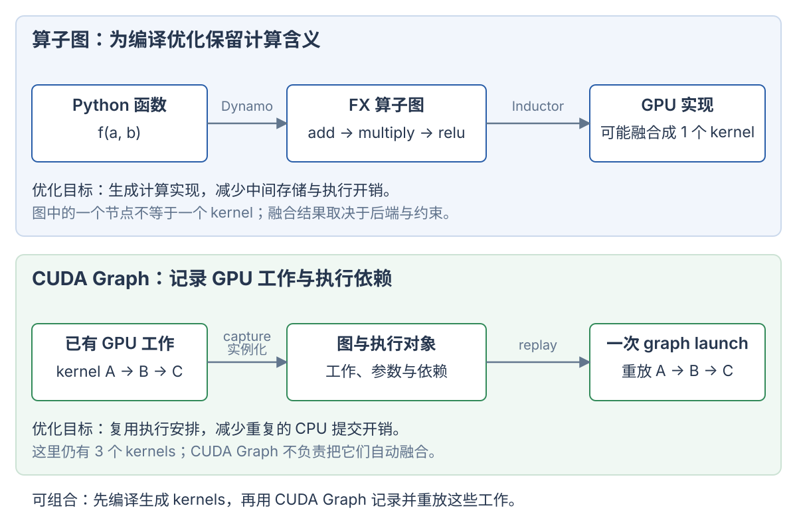
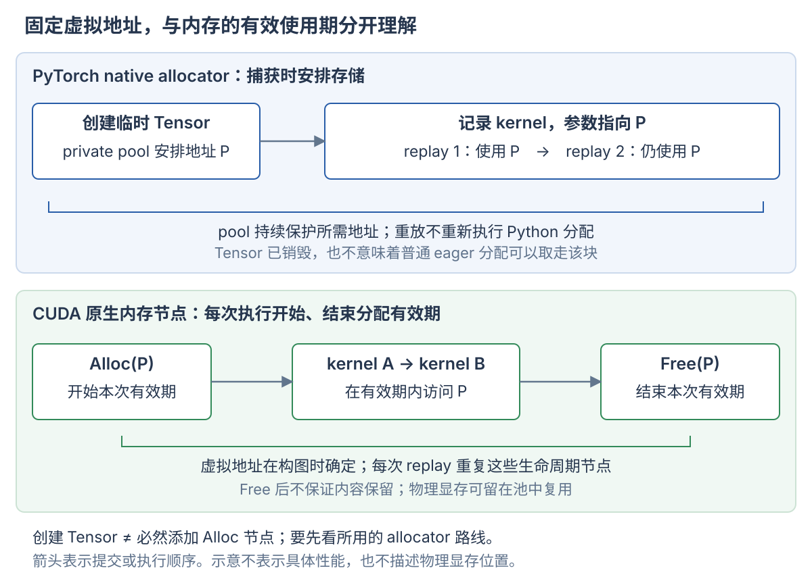

计算图用节点和边描述计算及依赖。编译器可以据此改变计算实现；执行系统也可以据此批量提交已有工作。“把工作组织成图”不自动意味着融合成一个 kernel，也不自动意味着所有节点并行执行。
torch.compile 是编译入口，TorchDynamo 捕获算子图，TorchInductor 优化并生成实现。CUDA Graph 记录 CUDA 工作与依赖，重点是复用执行安排、减少 CPU 提交开销。GPU 软件库的定位见 GPU 软件栈。
1. 三种常见的图分别记录什么
| 图 | 节点主要表达什么 | 边主要表达什么 | 使用者 |
|---|---|---|---|
| 算子图，例如 FX graph | Tensor 算子、函数调用与参数 | 数据依赖 | 图转换与编译后端 |
| autograd 图 | 反向求导所需的操作与状态 | 梯度传播依赖 | PyTorch 自动求导系统 |
| CUDA Graph | CUDA kernel、复制及其他支持的工作 | 执行依赖 | CUDA 执行系统 |
算子图中的一个 matmul 节点，后端可能实现为一个或多个 kernels；几个逐元素节点也可能合并成一个 kernel。图节点的数量不能直接当作 kernel 数量。
autograd 图服务于梯度计算。torch.compile 也支持不求梯度的推理函数，因此编译图并不依赖程序必须先有一张反向求导图。训练路径中的 AOTAutograd 会准备前向、反向图，再交给后端编译。PyTorch 编译组件
2. 用同一个函数区分优化与重放
import torch def f(a, b): t = a + b u = t * 0.5 return torch.relu(u)
假设 a/b 是同形状、连续的 CUDA 浮点 Tensor。普通 eager 路径通常逐个提交加法、乘法和 ReLU。输出依赖前一步，因此不能只因为画成图就把三个操作同时执行。

图中上半部分改变计算实现，下半部分复用提交安排。两者能够组合：先编译得到 kernel，再记录这些 kernel 的执行图。
算子图提供优化机会
算子图可以表达为：
a ─┐ add → multiply(0.5) → relu → output b ─┘
编译器看到完整的数据依赖后，可能生成一个逐元素融合 kernel：
读 a[i]、b[i]
→ 在局部临时值中计算 max((a[i] + b[i]) * 0.5, 0)
→ 写 output[i]
融合可以减少 kernel 启动，也可以消除 t/u 两个中间 Tensor 的物化。它改变了执行实现与数据移动。能否融合取决于算子支持、布局、依赖和后端策略。上面的一个 kernel 是说明用的可能结果，没有实机验证。
CUDA Graph 提供执行重放
如果记录的是已有的三个 kernels，重放时仍然执行这三个 kernels：
逐个提交：CPU → launch A；CPU → launch B；CPU → launch C 图重放： CPU → graph launch → A → B → C
CUDA Graph 保存工作、参数和依赖，并在实例化后复用执行安排。它不负责把上述三个逐元素 kernel 改写成一个融合 kernel。重放减少了重复的 host 端参数准备和逐项提交开销；GPU 上仍有对应的执行与调度成本。CUDA Graph 官方说明
3. torch.compile、Dynamo 与 Inductor 的关系
torch.compile(f) 用户入口
↓
TorchDynamo 捕获 Tensor 计算，建立 guards
↓
FX graph 算子及数据依赖
↓
AOTAutograd / 图转换 按路径准备待编译计算
↓
TorchInductor（默认后端） 优化、组织计算并生成实现
↓
生成的 GPU kernels / 对已有计算库的调用
↓
符合条件时再使用 CUDA Graph 复用执行安排
TorchDynamo 捕获可编译的程序区域
Dynamo 参与 Python 执行，提取 Tensor 操作及依赖，交给编译后端。Dynamo 本身不负责完成所有底层 kernel 优化，也不等于 CUDA Graph 的 stream capture。
为复用捕获和编译结果，Dynamo 建立 guards，即结果适用的条件。条件可以涉及 Tensor 的 dtype、device、shape 或程序状态；动态 shape 也可能使用符号条件。满足条件的后续调用可复用编译结果。Tensor 内的普通数值变化通常不要求重新编译。Dynamo 概览
例如，某个编译结果只支持 BF16 CUDA 输入，调用方换成 CPU FP32 输入时，原条件不再成立。系统可能编译另一份实现。guard 是判断实现是否适用的条件，不是每次检查所有 Tensor 元素。
TorchInductor 生成和组织计算实现
Inductor 接收图，组织融合、调度和代码生成。它可以生成 Triton kernel，也可以调用已有的 matmul 库。后端仍可以保留多个 kernels，不要求把整个模型塞进一个 kernel。
compiled_f = torch.compile(f, backend="inductor") # 在 CUDA 输入上调用时，首次调用可能触发捕获与编译。 # 后续满足 guards 的调用可复用编译结果。
这里不承诺固定 kernel 数或固定耗时。torch.compile 可以选择其他后端；Dynamo 和 Inductor 是不同职责的组件。torch.compile 接口
graph break 与重编译
graph break 表示捕获的计算在某处中断，程序可能分成多个编译区域，并由 Python 执行连接它们。依赖 Tensor 数值的 Python 控制流可能触发 graph break；例如把 x.sum().item() 取回 CPU，再决定 Python 分支。
guard 不满足则可能触发重编译。graph break 与重编译不是同一件事：前者关乎区域如何切分，后者关乎已有实现能否复用。
torch.compile(f, fullgraph=True) 要求函数捕获为单一图区域；遇到不支持的 graph break 会产生错误。单一算子图仍可以编译成多个 GPU kernels。 Dynamo 的 graph breaks、guards 与重编译
4. CUDA Graph 的创建与重放
CUDA 定义底层操作怎样组成图并执行；PyTorch 把 Tensor 程序接到这套机制上，并管理内存和框架状态。 最终执行的仍然是 CUDA 原生图。
CUDA 原生对象与阶段
| 对象或阶段 | 具体含义 |
|---|---|
cudaGraph_t |
图的描述，包含节点、节点参数和依赖边 |
cudaGraphExec_t |
实例化后的可执行图，可以反复提交 |
| 构图 | 显式添加节点与依赖，或用 stream capture 记录提交的工作 |
| 实例化 | 校验图并准备执行资源；不等于重新编译图中的 kernel |
| launch / replay | 向 stream 提交可执行图，按依赖执行 |
节点可以表示 kernel、memcpy、memset、事件、内存分配/释放，也有专门的 host、子图和条件节点。边表达执行依赖，节点必须等其前置条件满足后才能执行。
例如，kernel 节点记录函数、grid/block 配置、参数与依赖。它使用的是参数中的地址，不会根据 Python 变量名重新查找 Tensor。
Stream capture 本身就是 CUDA 提供的构图方式。捕获期间，提交到被捕获 stream 的工作进入图，不按普通 stream 工作立即执行。Python 或 C++ 的 host 代码仍在运行。显式构图与 stream capture 最终都得到 CUDA 图。CUDA Graph 创建与执行
显式建图与 stream capture
显式建图时，调用方逐个添加节点，并指定前置依赖。下面表达 A → B。这些 CUDA C++ 片段用于说明接口关系，省略错误检查和 kernel 定义，未实机运行。
cudaGraph_t graph; cudaGraphCreate(&graph, 0); cudaGraphNode_t node_a, node_b; // 假设 params_a / params_b 已填入函数、grid、block 和参数。 cudaGraphAddKernelNode(&node_a, graph, nullptr, 0, ¶ms_a); cudaGraphAddKernelNode(&node_b, graph, &node_a, 1, ¶ms_b);
第二次调用的 &node_a, 1 表示 B 有一个前置节点 A。显式建图需要调用方指定依赖。若两个节点都没有前置依赖，“先添加 A，再添加 B”不会自动形成 A → B。
stream capture 则利用已有的 stream 顺序和 event 依赖建立图：
cudaGraph_t graph; cudaStreamBeginCapture(stream, cudaStreamCaptureModeGlobal); kernel_a<<<grid, block, 0, stream>>>(...); kernel_b<<<grid, block, 0, stream>>>(...); cudaStreamEndCapture(stream, &graph);
A、B 位于同一条 stream，CUDA 因此记录 A → B。捕获记录的是工作及依赖，不是一次 GPU 执行的开始时间、结束时间或 SM 分配结果。
两种方式都可以接上同样的实例化与重放：
cudaGraphExec_t executable; cudaGraphInstantiateWithFlags(&executable, graph, 0); // 每次需要执行这一套工作时，提交已有的执行实例。 cudaGraphLaunch(executable, launch_stream);
显式建图适合直接管理节点；stream capture 方便复用已有的 kernel 和支持捕获的库调用。两者可以结合，例如先捕获，再修改图。CUDA Graph Runtime API、NVIDIA 构图示例
capture mode 控制检查范围，不代表捕获所有 stream
cudaStreamBeginCapture(stream, mode) 中的 mode，控制捕获期间对潜在不安全 API 调用的限制范围。
| mode | 限制范围 |
|---|---|
cudaStreamCaptureModeGlobal |
捕获会约束当前线程及其他线程中的潜在不安全调用 |
cudaStreamCaptureModeThreadLocal |
这次捕获的此类限制主要作用于发起捕获的线程 |
cudaStreamCaptureModeRelaxed |
放宽此类检查；与捕获必然冲突的操作仍然不允许 |
Global 不表示自动记录所有 stream、线程或 GPU 的工作。捕获从指定 stream 开始，其他 stream 需要按规则加入。同样，Relaxed 不会把任意 CPU 操作或普通 cudaMalloc 自动转换成图节点。CUDA Stream Capture API
PyTorch API 怎样对应到 CUDA
| PyTorch API 或行为 | 底层含义与框架工作 |
|---|---|
torch.cuda.CUDAGraph() |
创建管理原生 CUDA 图资源的包装对象 |
进入 with torch.cuda.graph(g) |
选择捕获 stream、准备框架状态，开始 CUDA stream capture |
| 捕获区域中的 Tensor 运算 | Python 执行算子调用；算子产生的底层 CUDA 工作被捕获 |
| 退出捕获区域 | 结束 capture；默认还会完成实例化 |
g.replay() |
准备需要更新的框架状态，再调用原生 graph launch |
g.pool() |
获取 PyTorch 捕获池的标识，用于共享内存；它不是图节点 |
torch.cuda.graph 是上下文管理器，torch.cuda.CUDAGraph 是图资源的包装对象。未指定 stream 时，上下文管理器使用内部 side stream。当前接口也支持 keep_graph=True，保留原生图供高级用户检查或修改。这时需要显式实例化，或在首次 replay 时实例化。PyTorch graph 接口、CUDAGraph 接口
一行 Tensor 运算不一定对应一个节点：view 可能只修改元数据，一个复杂算子也可能提交多个 kernels。PyTorch 的 capture 路径会调用 cudaStreamBeginCapture、cudaStreamEndCapture；replay 路径最终调用 cudaGraphLaunch。PyTorch CUDAGraph 实现
捕获 Python 产生的工作，不会重放 Python 本身
下面是语义片段，假设 CUDA 输入 x 已准备并完成 warmup：
scale = 2 g = torch.cuda.CUDAGraph() with torch.cuda.graph(g): print("capturing") # 捕获时由 CPU 执行一次 y = x * scale scale = 3 # 不会修改图中已经记录的参数 x.copy_(new_x) # 更新原输入存储中的内容 g.replay() # y 的预期结果仍为 new_x * 2
重放不会再次运行 print、读取 Python 变量 scale 或创建新的 y 对象。如果把可变标量放在固定的 GPU buffer 中，并让 kernel 每次读取它，数值就可以随重放改变。
普通 Python for range(3) 会在捕获时展开为当时产生的工作；普通 Python if 也不会自动成为可重放的条件节点。CUDA 原生支持专门的图更新和条件节点机制，但需要显式使用相应接口或受支持的上层功能。kernel 内部按照输入数据判断分支，与 Python 在 host 端重新选择工作，是不同的控制流层次。
多 stream：用 event 建立分支与汇合
假设 A 准备输入，B、C 分别计算两个结果，D 消费两个结果：
┌→ B ─┐
A ──┤ ├──→ D
└→ C ─┘
B、C 都要等待 A 完成，但彼此没有依赖。可以在两条 stream 上提交，再用 event 表达跨 stream 的先后关系：
// s0 / s1 是预先创建的显式 stream。 // a_ready / c_done 是预先创建、禁用计时的 CUDA events。 cudaStreamBeginCapture(s0, cudaStreamCaptureModeGlobal); prepare_a<<<grid, block, 0, s0>>>(...); // fork：s1 等待捕获中的 event，加入同一张捕获图。 cudaEventRecord(a_ready, s0); cudaStreamWaitEvent(s1, a_ready, 0); compute_b<<<grid, block, 0, s0>>>(...); compute_c<<<grid, block, 0, s1>>>(...); // join：把 s1 的工作汇回起始 stream。 cudaEventRecord(c_done, s1); cudaStreamWaitEvent(s0, c_done, 0); combine_d<<<grid, block, 0, s0>>>(...); cudaStreamEndCapture(s0, &graph);
| 依赖的来源 | 图中的边 |
|---|---|
| s0 内的提交顺序 | A → B → D |
| a_ready 的 record / wait | A → C |
| c_done 的 record / wait | C → D |
普通的捕获内 event record / wait 会转化成图依赖，不要求保留为运行时 event 节点。CUDA 也有显式保留 event 节点的 external event 用法；上例使用默认的内部依赖方式。
这里遵循 fork / join：其他 stream 通过 event 加入同一张图，所有分支在结束前汇回起始 stream。cudaStreamEndCapture() 必须在起始 stream 上调用。仅在 s0 开始捕获，不会自动捕获没有关联的 s1。两个独立开始的 capture 也不会因为一次普通 event wait 就自动合并。CUDA 跨 stream 捕获规则
重放只需一次 cudaGraphLaunch(executable, launch_stream)。launch stream 用于安排整张图与外部工作的顺序，不会把图内所有节点强制串行化。B、C 具备并行条件，但实际能否重叠取决于资源。CUDA 保留依赖关系，不承诺重放时沿用捕获时的 stream 分配。
stream 等 event 与 CPU 等 GPU 是两种同步
cudaStreamWaitEvent 表达“后续 GPU 工作等待某个前置条件”，CPU 可以继续提交。因此，CUDA 能把这种关系写成图中的边。
cudaStreamSynchronize 则要求 CPU 等到 stream 中的工作执行完成。捕获中的工作尚未作为普通工作提交执行，对正在捕获的 stream 调用它会与捕获冲突。对包含活跃捕获的 device 调用 cudaDeviceSynchronize，以及等待捕获中的 event，也有相应限制。
可表达为图依赖： GPU 工作 A 完成 → GPU 工作 B 才能开始 不能直接靠普通 capture 重放： GPU 工作 A 完成 → CPU 取回结果 → CPU 决定提交 B 还是 C
后一种流程需要把 host 决策放在捕获之外，或使用支持的图更新、条件节点机制。普通 CPU 分支不会自动变成图的一部分。NVIDIA 捕获约束
多 GPU：每个 rank 的图包含本地计算和通信工作
NCCL（NVIDIA Collective Communication Library）支持捕获 collective、点对点和 group 操作。分布式程序通常让每个 rank 捕获本 GPU 的工作，再由所有参与 rank 启动各自的图。
以两个 rank 的 Tensor Parallel 为例，两个 GPU 分别计算局部结果，经过 AllReduce 后继续计算：
rank 0 的图：局部 GEMM₀ → NCCL AllReduce₀ → 后续计算₀
⇅ 通信
rank 1 的图：局部 GEMM₁ → NCCL AllReduce₁ → 后续计算₁
这些是各进程管理的图对象，通信依赖由 NCCL 协议连接。“每个 rank 一张图”是常见的分布式组织方式。一般的 host-launched CUDA Graph 也支持跨设备操作。device-launched graph 则有单设备等额外限制。NVIDIA 多设备说明、CUDA 图实例化限制
下面是每个 rank 各自执行的片段。假设本 rank 的 device、communicator、stream 和 buffers 已初始化，计算及通信路径已预热：
cudaStreamBeginCapture(stream, cudaStreamCaptureModeGlobal); local_compute<<<grid, block, 0, stream>>>(sendbuf); ncclAllReduce( sendbuf, recvbuf, count, ncclFloat, ncclSum, comm, stream ); consume_result<<<grid, block, 0, stream>>>(recvbuf); cudaStreamEndCapture(stream, &graph); cudaGraphInstantiateWithFlags(&executable, graph, 0); // 各参与 rank 都要提交各自对应的图。 cudaGraphLaunch(executable, stream);
捕获时，NCCL 把通信执行工作接入图；重放时，CPU 无需再调用原来的 ncclAllReduce。GPU 之间仍然要传输数据、归约并等待通信条件，CUDA Graph 不会省去这些工作。
同一个通信操作是否使用 capture，必须在参与 rank 间一致。collective 涉及 communicator 中的参与 rank；点对点通信涉及发送方与接收方。重放时，各方必须启动源于该次 collective capture 的对应图，并保持通信调用的匹配关系和顺序。
各 rank 不需要在同一纳秒启动，但不能只启动一方就等待整个 collective 完成。某一方缺席或通信顺序不匹配，可能让其他 rank 一直等待。当前 NCCL 文档指出，同一进程控制多 GPU 时可能发生 graph launch 死锁。单线程依次启动尤其需要注意；文档推荐每个进程管理一张 GPU。NCCL CUDA Graph 支持与约束
计算 stream 与通信 stream 一起捕获
如果 NCCL 使用单独的 comm stream，可以在每个 rank 内复用前面的 fork / join：
compute stream：GEMM ───────────────────→ 后续计算
│ event ↑ event
↓ │
comm stream： 等 GEMM → NCCL AllReduce┘
从 compute stream 开始捕获，用 event 接入 comm stream。提交 NCCL 工作后，再用 event 汇回 compute stream，最后结束捕获。
同一 GPU 内，图的边保证 GEMM、通信和后续计算的顺序；不同 GPU 之间，NCCL 协议保证交换与归约。CUDA 不会因为两个操作访问同一指针，就自动推导遗漏的跨 stream 依赖，调用方仍须表达这些关系。
5. 地址固定：虚拟地址、物理显存与数据内容
在不修改图、直接 replay 的模型中，记录的指针参数保持不变。这里指的是 GPU 虚拟地址，不是某个永远不变的 HBM 物理位置。
kernel 参数中的虚拟地址 P
↓ GPU 地址转换
支撑该地址的物理显存
↓
当前保存的数据
这三个对象要分别理解。地址保持不变，内容仍可更新。对于 CUDA 原生 graph allocation，CUDA 还可以保留虚拟地址并更换物理映射。这不表示普通 PyTorch graph pool 每次 replay 都会重新映射显存。CUDA graph allocation 的地址保证
数据可变，基础捕获模型中的地址保持稳定
新 batch 可以复制到固定输入缓冲区，再重放图。换一个 Tensor 对象并重新绑定 Python 变量，不会自动修改图中的指针。
static_a 原来指向地址 P
↓ capture
图中的输入指针为 P
static_a.copy_(new_a) 更新 P 中的数据，重放能读到新内容
static_a = new_a 只改 Python 绑定，图仍然读取 P
因此，输入、权重、输出与 workspace 的地址和使用期都需要有效。图外创建的输入或权重不会因为被 kernel 引用，就自动迁入 graph-private pool；调用方仍需保持它们的存储存活。
静态输出也是会被覆盖的 buffer。saved = static_output 只增加引用，不能保存旧内容；需要保留某次结果时，应在下一次覆盖之前执行 saved = static_output.clone()。跨 stream 使用还必须安排事件或等待关系。
“静态”限定的是这份执行安排。基础捕获通常固定 shape、stride、dtype 和 launch 参数。底层 CUDA 可在限制内更新图，上层也可为不同 batch size 捕获不同版本。不能把常用捕获约定扩大为“CUDA 的所有图都不能更新”。
6. PyTorch 为什么需要 graph-private pool
下面先讨论 PyTorch 的 native caching allocator。它管理内存块，Tensor 持有其中一段存储。普通 eager 中，Tensor 的存储不再被使用且同步条件满足后，allocator 可以将该块交给其他 Tensor。回到缓存并不等于立即归还驱动。
Python 对象销毁后，图仍然需要原地址
考虑捕获中的计算：
t = x * 2 y = t + 1 del t
图中仍然有“写入 t 的地址 P”和“读取 P”的 kernel。下次 replay 会再次访问 P。如果普通 allocator 已把 P 分给无关 Tensor z，replay 就会覆盖 z。
为避免这类冲突，PyTorch 在捕获期间把分配导向 graph-private pool。图还需要这些地址时，普通 eager 分配不能随意取走它们。pool 是 allocator 管理的内存块集合和记录，不要求是一段连续显存，也不是额外硬件。PyTorch graph memory management
创建 Tensor 不等于添加 Alloc 节点
with torch.cuda.graph(g): tmp = torch.empty_like(x) torch.mul(x, 2, out=tmp)
在 native allocator 路线中，可以分成两条路径：
框架内存管理： 创建 tmp 的元数据 → allocator 从 private pool 安排存储 P CUDA 工作捕获： 记录 mul kernel → 输出参数指向 P
empty_like 不初始化数据，安排其存储并不必然产生 CUDA Alloc 节点。replay 时也不重新执行 Python 的 empty_like；kernel 直接写入 P。
pool 可以复用已有空闲块，也可以在捕获准备和分配过程中增长。无需在开始捕获之前一次性预分配全部空间。捕获完成后，所需内存会被保留，以供未来 replay 使用。
private pool 内部仍然可以复用
如果捕获中的使用顺序是：
生成 a → 使用 a → a 已无后续用途 → 生成 b → 使用 b
且尺寸、布局与同步条件允许，a、b 可以复用同一段存储。每次 replay 都按捕获的依赖执行，就能重复这套安排。
因此，pool 保留的是支撑执行过程所需的内存高水位，不是所有历史分配大小的累加。实际占用还受块大小、碎片、输出是否继续存活和 stream 使用影响。PyTorch allocator 的 graph capture 说明
7. CUDA 原生的图内分配与释放
CUDA 原生支持把分配和释放作为图节点。它们表达一段内存的 GPU 有效使用期，因此可以和固定虚拟地址同时成立。

上图比较 native allocator 的典型路径与 CUDA 原生内存节点。若 PyTorch 使用 cudaMallocAsync backend，底层行为可能涉及内存节点，不能沿用“只有固定 buffer、没有分配节点”的假设。具体行为取决于 allocator backend 和版本。
cudaMallocAsync 怎样被捕获成节点
下面是 CUDA C++ 流程片段，省略错误处理、变量初始化与 kernel 定义。bytes 是 host 端在捕获时已经确定的大小：
cudaStreamBeginCapture(stream, cudaStreamCaptureModeGlobal); cudaMallocAsync(&p, bytes, stream); kernel_A<<<grid, block, 0, stream>>>(p); kernel_B<<<grid, block, 0, stream>>>(p); cudaFreeAsync(p, stream); cudaStreamEndCapture(stream, &graph); cudaGraphInstantiate(&exec, graph, 0); cudaGraphLaunch(exec, stream);
对应的图是：
Alloc(bytes, P) → kernel A(P) → kernel B(P) → Free(P)
构图时，CUDA 确定并返回虚拟地址 P；执行时，分配节点开始这次分配的有效期，释放节点结束有效期。所有访问 P 的操作都必须排在 Alloc 之后、Free 之前。跨分支的访问也需要相应依赖，不能只看 host 代码的书写顺序。
这不是 GPU 执行到 Alloc 时才由 Python 决定新的 shape 或大小，也不是每次 replay 重新调用上述 C++ 函数。重放执行的是预先记录的节点。CUDA graph memory nodes
分配有效期与物理资源保留是两件事
| 对象 | 构图与重放时的含义 |
|---|---|
| 虚拟地址 P | 创建分配节点时确定，在节点生命周期内保持固定 |
| 本次分配的有效期 | 随 GPU 执行到 Alloc 而开始，随 Free 而结束 |
| 物理显存 | CUDA 管理，可缓存、复用或重新映射到固定虚拟地址 |
| 数据内容 | Free 后不再保证保留，下一次 Alloc 不会自动恢复旧数据 |
replay 经过 Alloc 不等于每次都向系统重新申请物理显存。经过 Free 也不等于立刻把物理显存归还系统。CUDA 可以保留资源，以降低后续分配和映射开销。
若图包含 Alloc P → 使用 P → Free P → Alloc Q → 使用 Q，依赖已证明 P、Q 的有效期不重叠，CUDA 可以复用底层资源。若 P、Q 会同时被访问，就不能让它们的数据互相覆盖。
图也可以把分配保留到自身执行结束之后，交给后续工作使用和释放。这时需要跨图或 stream 顺序保证有效期；销毁图本身不会自动释放仍然存活的 graph allocation。上面的片段在同一图内释放，避免了这类跨图所有权。
三种“图内分配”要分开读
| 所谓的“图内分配” | 实际含义 |
|---|---|
| PyTorch 捕获区域里创建 Tensor | host 端由 allocator 安排存储；不一定添加 Alloc 节点 |
| CUDA 图中有内存节点 | 图执行时经过 Alloc / Free，改变该次分配的有效期 |
| kernel 内调用设备端 malloc | 设备端动态分配机制，不等同于图内存节点 |
cudaMallocAsync / cudaFreeAsync 具有可捕获的 stream 顺序语义。普通 cudaMalloc / cudaFree 不能当作它们的可捕获替代品。放松 capture 的错误检查也不会把普通分配自动转成内存节点。
8. 多个图共享 pool：复用内存与执行约束
PyTorch 的共享捕获池
假设为 batch size 1 和 8 分别捕获两个推理图。每次只执行其中一个时，两套完全独立的临时存储可能浪费显存。共享 pool 允许后一次捕获在满足分配条件时复用池中已有块。
# 结构示意：输入已创建，两个 workload 已完成 warmup。 g1 = torch.cuda.CUDAGraph() g2 = torch.cuda.CUDAGraph() with torch.cuda.graph(g1): y1 = workload1(x1) with torch.cuda.graph(g2, pool=g1.pool()): y2 = workload2(x2) g1.replay() g2.replay()
pool= 是分配资源的共享约定，不会把两个图合并，也不会自动替调用方建立它们的执行顺序。
| 使用方式 | 需要保持的条件 |
|---|---|
| 相互依赖的一串图，例如 G1 的输出供 G2 使用 | 按捕获时的顺序重放，保持中间值的生命周期，不能并发重放 |
| 相互独立、按请求选择的图，例如不同 batch bucket | 不并发；复用存储前消费或复制仍需保留的输出 |
| 在不同 streams 上重放共享存储的图 | 必须用 stream/event 依赖确保实际执行不重叠；仅按顺序调用两个 Python 方法不够 |
图已结束，不代表它的输出已经没有用途。如果某块存储在两个图中被复用，G2 的写入可以覆盖 G1 留下的数据。共享 pool 不会为每个图保存一份历史快照。
例如，需要跨后续 replay 保留 y1 的值时，可以在覆盖前于有序 stream 上执行 saved_y1 = y1.clone()。这会增加一次复制及保存结果所需的存储，应按输出的实际生命周期使用。PyTorch sharing memory across captures
假设两个图分别需要 100 MiB 和 160 MiB 的临时块。如果这些块都能复用，理想化估算可能接近 160 MiB，而非 260 MiB。这只是忽略碎片与长期存活输出后的容量例子。传入同一个 pool 不保证最终占用等于两个峰值的最大值。捕获期间仍存活的输出、分配顺序和块尺寸都可能限制复用。
CUDA 原生也有 graph memory pool
CUDA 原生内存节点有自己的资源管理。图内存分配的有效期不重叠时，CUDA 可以复用物理内存。不同图可以保留不同虚拟地址，再在允许的执行区间映射到同一批物理资源。
这种由 CUDA 管理映射与有效期的复用，不等于 PyTorch native private pool 的共享约定。不能把“CUDA 可为并发图安排不同物理存储”推导成“共享 PyTorch pool 的图可以任意并发”。
9. pool、workspace 与显存释放分别属于哪一层
| 名称 | 管理者 | 具体作用 |
|---|---|---|
| PyTorch 普通 caching pool | PyTorch allocator | 缓存、分割和复用普通 Tensor 的内存块 |
| PyTorch graph-private pool | PyTorch allocator | 为一份或多份捕获保留内存块，保护 replay 使用的地址 |
cudaMemPool_t |
CUDA stream-ordered allocator | 普通异步分配使用的内存资源池 |
| CUDA graph memory pool | CUDA runtime/driver | 为图内存节点管理底层物理资源 |
| workspace | 算子或库使用的 buffer | 保存调度元数据、中间结果或其他临时数据；不是一种 pool |
一个 workspace 可以由调用者提前分配，也可以由库通过 allocator 取得。图能否安全使用它，取决于地址、容量、数据准备顺序与生命周期。几个图若共享同一个 workspace，也必须处理实际访问的重叠；pool 不同并不会消除这块外部 buffer 的冲突。
为什么 del Tensor 后显存还在
del 删除 Python 引用。只有最后一个持有者释放存储，allocator 才能回收该分配；缓存池随后还可能保留内存块。对 graph-private pool，还需要考虑图将来的 replay。
PyTorch 文档说明，私有池的存活期与对应图及捕获中创建的 Tensor 有关。共享池还可能被其他图引用。因此，只删除一个临时 Tensor，或只销毁其中一个图，都不保证整个池释放。PyTorch 内存管理
memory_allocated() 观察 Tensor 分配占用，memory_reserved() 观察 allocator 管理的总量；graph pool 中保留的空闲块可以造成两者差距。统计含义还与 allocator backend 有关，不能把差值直接称作泄漏。
| 操作 | 释放范围与边界 |
|---|---|
torch.cuda.empty_cache() |
释放 allocator 能归还的未使用缓存；不能把活图仍需保护的地址随意释放 |
cudaMemPoolTrimTo() |
修剪普通 CUDA stream-ordered pool 的可释放资源 |
cudaDeviceGraphMemTrim() |
修剪 CUDA 原生图内存池中未被活跃工作或未释放分配占用的物理资源 |
CUDA 文档明确区分后两种池。原生 graph pool 被 trim 后，图的下次执行可能需要重新分配和映射资源。因此不能把 trim 当作每次 replay 前后的固定步骤。CUDA graph physical memory footprint
10. 捕获约束与手动使用示例
捕获前准备什么
下面针对普通 PyTorch 手动捕获。具体算子和库仍需支持所在版本的 CUDA capture：
| 准备或约束 | 原因 |
|---|---|
| 用目标 shape / dtype / device 执行 warmup | 将编译、库初始化和算法准备放在重复执行之外；warmup 不保证任意代码都能捕获 |
| 保持输入、权重、输出和 workspace 有效 | 图保存地址，不会按 Python 变量名重新查找对象 |
| 不在捕获中取 GPU 标量来决定 Python 分支 | .item() 等 host 同步行为不属于普通可重放 GPU 路径 |
| 不同步正在捕获的 stream 或整个 device | 捕获中的工作尚未作为普通工作执行，不能按执行完成状态查询或等待 |
| 多 stream 捕获表达完整依赖并汇合 | CUDA 必须知道被捕获工作之间的先后关系 |
| 重放前更新数据，并在使用输出前建立执行顺序 | graph launch 是异步提交，不等于 GPU 已经完成 |
PyTorch 手动捕获示意
下面代码与第 2 节的 f 配合使用。它是 CUDA 示例，未实机运行；warmup 在 side stream 上执行。代码保留静态输入、输出引用，并在同一当前 stream 上安排输入复制与 replay。
static_a = torch.randn(1024, device="cuda") static_b = torch.randn(1024, device="cuda") warmup_stream = torch.cuda.Stream() warmup_stream.wait_stream(torch.cuda.current_stream()) with torch.cuda.stream(warmup_stream): for _ in range(3): f(static_a, static_b) torch.cuda.current_stream().wait_stream(warmup_stream) graph = torch.cuda.CUDAGraph() with torch.cuda.graph(graph): static_output = f(static_a, static_b) new_a = torch.randn_like(static_a) new_b = torch.randn_like(static_b) static_a.copy_(new_a) static_b.copy_(new_b) graph.replay() # 当前 stream 后续的 GPU 操作可按顺序消费 static_output。 # 后续 replay 会覆盖它；需要保留时，在覆盖前 clone 到独立存储。
这段代码中，静态输入在捕获外分配；f 的中间 Tensor 和输出在捕获中由 allocator 安排。默认 native allocator 的 private pool 保护后者；调用方保持前者存活。两类存储共同成为这张图的运行资源。
捕获、实例化、warmup、输入复制与 GPU 执行本身仍有成本。本页仅检查文档与示例语法，不把它们作为 CUDA 执行或性能验证结果。
11. 编译优化与 CUDA Graph 能组合，但互不等同
| 使用方式 | 在这个逐元素示例中可能发生什么 | 主要改变 |
|---|---|---|
| eager | 分别提交加法、乘法、ReLU | 按算子直接执行 |
| 只用图编译优化 | 三个操作可能融合成一个 kernel | 计算实现、kernel 数与中间存储 |
| 只记录原始工作为 CUDA Graph | 一个 graph launch 提交原来的三个 kernels | CPU 提交方式 |
| 编译后再使用 CUDA Graph | 重放编译产生的工作 | 同时复用优化实现与执行安排 |
compiled_f = torch.compile(f, mode="reduce-overhead")
这个模式会尝试利用 CUDA Graph 降低开销，但受设备、计算内容和捕获约束影响。不能仅凭使用了这个模式，就宣称每次执行都成功重放 CUDA Graph。编译器也可能跳过不安全的区域。CUDA Graph Trees
一份可处理动态 shape 的编译图，可以对应多份具体 shape 的 CUDA Graph 捕获。推理系统也可能把 batch 大小归入有限的 buckets，分别维护捕获与静态缓冲区。因此“编译图支持动态 shape”与“单份基础 CUDA Graph 的参数固定”能够同时成立。
12. 计算图怎样影响性能
计算图为后端提供计算关系。后端可以利用这些关系融合算子、消除中间存储、调整调度或规划内存。能实现哪些优化取决于后端和计算。CUDA Graph 则复用工作与依赖的执行安排，减少重复提交。
如果一个大 GEMM 已经持续使用 GPU，减少 host 提交开销不一定显著改变总耗时。如果程序由多个短 kernels 构成，且 CPU 提交造成间隙，CUDA Graph 更可能带来收益。这里是在说明机制，不能替代实际时间线和受控测量。
profiler 可以记录 kernel 数量、CPU 提交与 GPU 工作之间的空隙、graph replay 及总延迟。对照编译前后的记录，才能确认实际收益。本页没有执行编译、图捕获、CUDA 用例或性能测试。